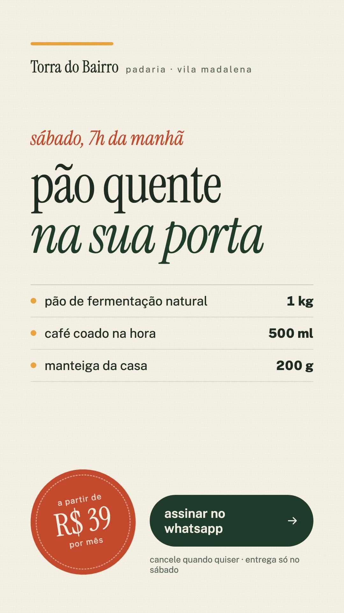
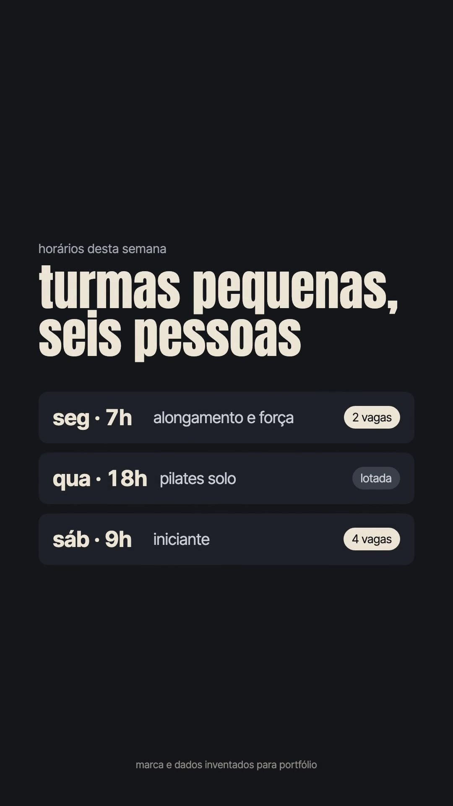

anúncio, arte e vídeo
peça vertical
que vende uma coisa só
As duas peças abaixo foram feitas do zero para marcas que não existem: nome, oferta, texto, direção de arte, animação e o vídeo final. É o mesmo trabalho de um anúncio de cliente, sem depender de foto pronta, banco de imagem ou material antigo. Entregues em 1080 × 1920, prontas para Instagram, TikTok e status de WhatsApp.

padaria · story
Torra do Bairro
Assinatura de pão e café. O horário da entrega virou o argumento e o preço entrou como selo carimbado.
- 9:16
- 6 s
- arte + animação

estúdio de pilates · reel
Estúdio Alonga
Captação para aula experimental em três cenas: a dor, a grade real de horários e o convite no WhatsApp.
- 9:16
- 9 s
- roteiro + edição
Marcas, horários, preços e pessoas são inventados. Nada aqui é cliente, venda ou resultado real: são peças de exemplo para mostrar o trabalho.